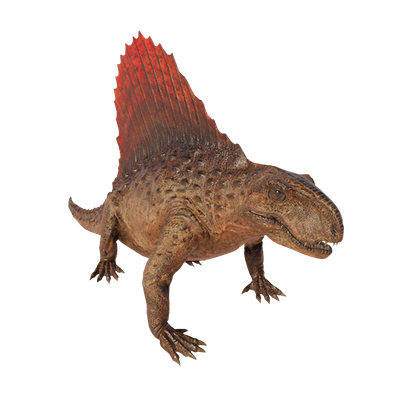

Useful Website
Although it has a sailed back similar to many dinosaurs, Dimetrodon is actually a primitive synapsid dating back to the early Permian period, around 290 million years ago – before the existence of even the earliest dinosaurs! The name Dimetrodon means ‘two measures of teeth’, in reference to this apex predator’s razor-sharp teeth that it used to grab and tear flesh from its prey.
